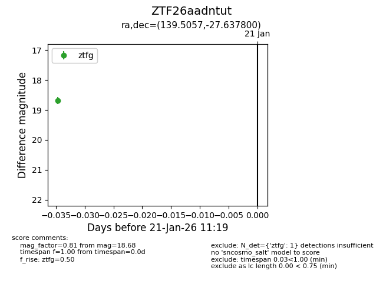
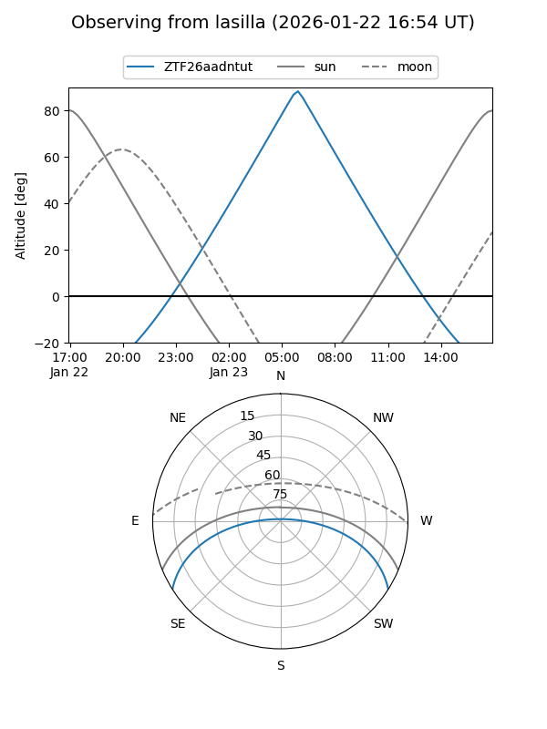
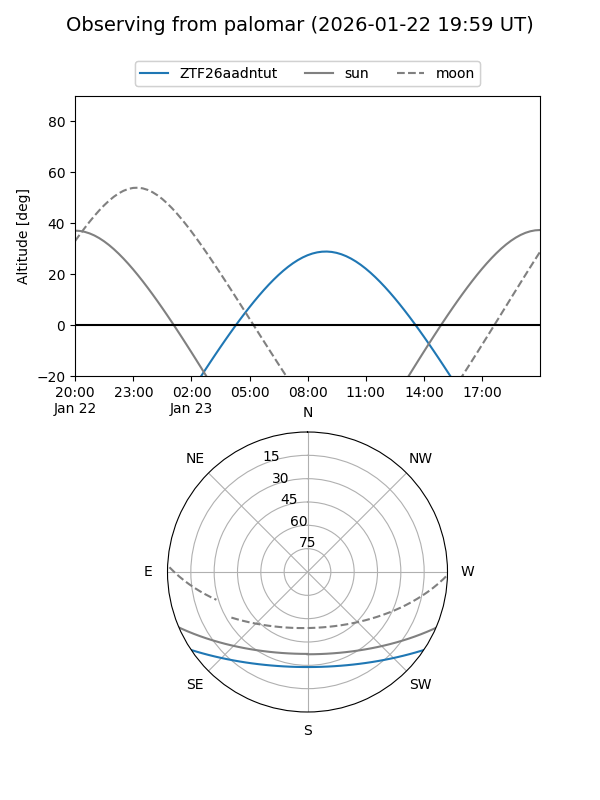

ZTF26aadntut
Target ZTF26aadntut at 2026-01-23 11:21
Aliases and brokers:
FINK: link
Lasair: link
ALeRCE: link
alt names
ZTF26aadntut (ztf,fink_ztf)
Coordinates:
equatorial (ra, dec) = 139.5057,-27.63780
equatorial (HMS+DMS) = 09:18:01.37,-27:38:16.08
galactic (l, b) = (255.5474,+15.01518)
Flags:
Photometry:
last ztfg=18.68
1 ztfg detections
Lightcurve

Visibility


Additional plots